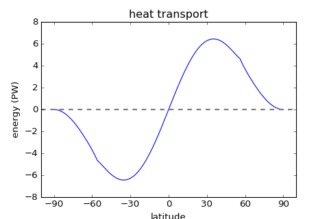
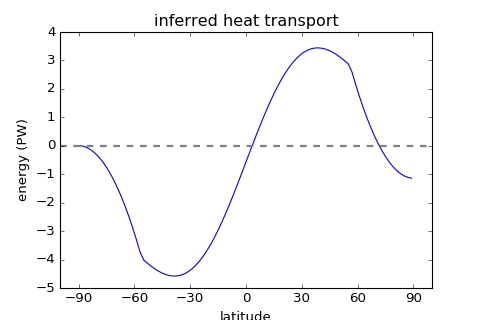

climlab.model package¶
climlab.model.ebm module¶

-
class
climlab.model.ebm.EBM(num_lat=90, S0=1365.2, A=210.0, B=2.0, D=0.555, water_depth=10.0, Tf=-10.0, a0=0.3, a2=0.078, ai=0.62, timestep=350632.51200000005, T0=12.0, T2=-40.0, **kwargs)[source]¶ Bases:
climlab.process.energy_budget.EnergyBudgetA parent class for all Energy-Balance-Model classes.
This class sets up a typical EnergyBalance Model with following subprocesses:
- Outgoing Longwave Radiation (OLR) parametrization through
AplusBT - solar insolation paramtrization through
P2Insolation - albedo parametrization in dependence of temperature through
StepFunctionAlbedo - energy diffusion through
MeridionalDiffusion
Initialization parameters
An instance of
EBMis initialized with the following arguments (for detailed information see Object attributes below):Parameters: - num_lat (int) –
number of equally spaced points for the latitue grid. Used for domain intialization of
zonal_mean_surface- default value:
90
- default value:
- S0 (float) –
solar constant
- unit: \(\frac{\textrm{W}}{\textrm{m}^2}\)
- default value:
1365.2
- A (float) –
parameter for linear OLR parametrization
AplusBT- unit: \(\frac{\textrm{W}}{\textrm{m}^2}\)
- default value:
210.0
- B (float) –
parameter for linear OLR parametrization
AplusBT- unit: \(\frac{\textrm{W}}{\textrm{m}^2 \ ^{\circ} \textrm{C}}\)
- default value:
2.0
- D (float) –
diffusion parameter for Meridional Energy Diffusion
MeridionalDiffusion- unit: \(\frac{\textrm{W}}{\textrm{m}^2 \ ^{\circ} \textrm{C}}\)
- default value:
0.555
- water_depth (float) –
depth of
zonal_mean_surfacedomain, which the heat capacity is dependent on- unit: meters
- default value:
10.0
- Tf (float) –
freezing temperature
- unit: \(^{\circ} \textrm{C}\)
- default value:
-10.0
- a0 (float) –
base value for planetary albedo parametrization
StepFunctionAlbedo- unit: dimensionless
- default value:
0.3
- a2 (float) –
parabolic value for planetary albedo parametrization
StepFunctionAlbedo- unit: dimensionless
- default value:
0.078
- ai (float) –
value for ice albedo paramerization in
StepFunctionAlbedo- unit: dimensionless
- default value:
0.62
- timestep (float) –
specifies the EBM’s timestep
- unit: seconds
- default value: (365.2422 * 24 * 60 * 60 ) / 90
-> (90 timesteps per year)
- T0 (float) –
base value for initial temperature
- unit \(^{\circ} \textrm{C}\)
- default value:
12
- T2 (float) –
factor for 2nd Legendre polynomial
P2to calculate initial temperature- unit: dimensionless
- default value:
40
Object attributes
Additional to the parent class
EnergyBudgetfollowing object attributes are generated and updated during initialization:Variables: - param (dict) – The parameter dictionary is updated with a couple
of the initatilzation input arguments, namely
'S0','A','B','D','Tf','water_depth','a0','a2'and'ai'. - domains (dict) – If the object’s
domainsand thestatedictionaries are empty during initialization a domainsfcis created throughzonal_mean_surface(). In the meantime the object’sdomainsandstatedictionaries are updated. - subprocess (dict) – Several subprocesses are created (see above)
through calling
add_subprocess()and therefore the subprocess dictionary is updated. - topdown (bool) – is set to
Falseto call subprocess compute methods first. See alsoTimeDependentProcess. - diagnostics (dict) – is initialized with keys:
'OLR','ASR','net_radiation','albedo'and'icelat'throughinit_diagnostic().
Example: Creation and integration of the preconfigured Energy Balance Model:
>>> import climlab >>> model = climlab.EBM() >>> model.integrate_years(2.) Integrating for 180 steps, 730.4844 days, or 2.0 years. Total elapsed time is 2.0 years.
For more information how to use the EBM class, see the Tutorials chapter.
-
diffusive_heat_transport()[source]¶ Compute instantaneous diffusive heat transport in unit \(\textrm{PW}\) on the staggered grid (bounds) through calculating:
\[H(\varphi) = - 2 \pi R^2 cos(\varphi) D \frac{dT}{d\varphi} \approx - 2 \pi R^2 cos(\varphi) D \frac{\Delta T}{\Delta \varphi}\]Return type: array of size np.size(self.lat_bounds)
-
global_mean_temperature()[source]¶ Convenience method to compute global mean surface temperature.
Calls
global_mean()method which for the object attriuteTswhich calculates the latitude weighted global mean of a field.Example: Calculating the global mean temperature of initial EBM temperature:
>>> import climlab >>> model = climlab.EBM(T0=14., T2=-25) >>> model.global_mean_temperature() Field(13.99873037400856)
-
heat_transport()[source]¶ Returns instantaneous heat transport in unit \(\textrm{PW}\) on the staggered grid (bounds) through calling
diffusive_heat_transport().Example: import climlab import matplotlib.pyplot as plt # creating & integrating model model = climlab.EBM() model.step_forward() # plot fig = plt.figure( figsize=(6,4)) ax = fig.add_subplot(111) bounds = model.domains['Ts'].axes['lat'].bounds ax.plot(bounds, model.heat_transport()) ax.set_title('heat transport') ax.set_xlabel('latitude') ax.set_xticks([-90,-60,-30,0,30,60,90]) ax.set_ylabel('energy (PW)') plt.axhline(linewidth=2, color='grey', linestyle='dashed') plt.show()
(Source code, png, hires.png, pdf)

-
heat_transport_convergence()[source]¶ Returns instantaneous convergence of heat transport.
\[h(\varphi) = - \frac{1}{2 \pi R^2 cos(\varphi)} \frac{dH}{d\varphi} \approx - \frac{1}{2 \pi R^2 cos(\varphi)} \frac{\Delta H}{\Delta \varphi} \]h is the dynamical heating rate in unit \(\textrm{W}/ \textrm{m}^2\) which is the convergence of energy transport into each latitude band, namely the difference between what’s coming in and what’s going out.
Example: import climlab import matplotlib.pyplot as plt # creating & integrating model model = climlab.EBM() model.integrate_converge() # plot fig = plt.figure( figsize=(6,4)) ax = fig.add_subplot(111) ax.plot(model.lat, model.heat_transport_convergence()) ax.set_title('heat transport convergence') ax.set_xlabel('latitude') ax.set_xticks([-90,-60,-30,0,30,60,90]) ax.set_ylabel('energy (W/m$^2$)') plt.axhline(linewidth=2, color='grey', linestyle='dashed') plt.show()
(Source code, png, hires.png, pdf)

-
inferred_heat_transport()[source]¶ Calculates the inferred heat transport by integrating the TOA energy imbalance from pole to pole.
The method is calculating
\[H(\varphi) = 2 \pi R^2 \int_{-\pi/2}^{\varphi} cos\phi \ R_{TOA} d\phi\]where \(R_{TOA}\) is the net radiation at top of atmosphere.
Returns: total heat transport on the latitude grid in unit \(\textrm{PW}\)
Return type: array of size
np.size(self.lat_lat)Example: import climlab import matplotlib.pyplot as plt # creating & integrating model model = climlab.EBM() model.step_forward() # plot fig = plt.figure( figsize=(6,4)) ax = fig.add_subplot(111) ax.plot(model.lat, model.inferred_heat_transport()) ax.set_title('inferred heat transport') ax.set_xlabel('latitude') ax.set_xticks([-90,-60,-30,0,30,60,90]) ax.set_ylabel('energy (PW)') plt.axhline(linewidth=2, color='grey', linestyle='dashed') plt.show()
(Source code, png, hires.png, pdf)

- Outgoing Longwave Radiation (OLR) parametrization through
{kind=link}
{kind=link}
{kind=link}
{kind=link}
{kind=link}
{kind=link}
-
class
climlab.model.ebm.EBM_annual(**kwargs)[source]¶ Bases:
climlab.model.ebm.EBM_seasonalA class that implements Energy Balance Models with annual mean insolation.
The annual solar distribution is calculated through averaging the
DailyInsolationover time which has been used in used in the parent classEBM_seasonal. That is done by the subprocessAnnualMeanInsolationwhich is more realistic than theP2Insolationmodule used in the classicalEBMclass.According to the parent class
EBM_seasonalthe model will not have an ice-albedo feedback, if albedo ice parameter'ai'is not given. For details see there.Object attributes
Following object attributes are updated during initialization:
Variables: subprocess (dict) – suprocess
'insolation'is overwritten byAnnualMeanInsolationExample: The
EBM_annualclass uses a different insolation subprocess than theEBMclass:>>> import climlab >>> model_annual = climlab.EBM_annual() >>> print model_annual
climlab Process of type <class 'climlab.model.ebm.EBM_annual'>. State variables and domain shapes: Ts: (90, 1) The subprocess tree: top: <class 'climlab.model.ebm.EBM_annual'> diffusion: <class 'climlab.dynamics.diffusion.MeridionalDiffusion'> LW: <class 'climlab.radiation.AplusBT.AplusBT'> albedo: <class 'climlab.surface.albedo.P2Albedo'> insolation: <class 'climlab.radiation.insolation.AnnualMeanInsolation'>
-
class
climlab.model.ebm.EBM_seasonal(a0=0.33, a2=0.25, ai=None, **kwargs)[source]¶ Bases:
climlab.model.ebm.EBMA class that implements Energy Balance Models with realistic daily insolation.
This class is inherited from the general
EBMclass and uses the insolation subprocessDailyInsolationinstead ofP2Insolationto compute a realisitc distribution of solar radiation on a daily basis.If argument for ice albedo
'ai'is not given, the model will not have an albedo feedback.An instance of
EBM_seasonalis initialized with the following arguments:Parameters: - a0 (float) – base value for planetary albedo parametrization
StepFunctionAlbedo[default: 0.33] - a2 (float) – parabolic value for planetary albedo parametrization
StepFunctionAlbedo[default: 0.25] - ai (float) – value for ice albedo paramerization in
StepFunctionAlbedo(optional)
Object attributes
Following object attributes are updated during initialization:
Variables: - param (dict) – The parameter dictionary is updated with
'a0'and'a2'. - subprocess (dict) – suprocess
'insolation'is overwritten byDailyInsolation.
if
'ai'is not given:Variables: - param (dict) –
'ai'and'Tf'are removed from the parameter dictionary (initialized by parent classEBM) - subprocess (dict) – suprocess
'albedo'is overwritten byP2Albedo.
if
'ai'is given:Variables: - param (dict) – The parameter dictionary is updated with
'ai'. - subprocess (dict) – suprocess
'albedo'is overwritten byStepFunctionAlbedo(which basically has been there before but now is updated with the new albedo parameter values).
Example: The annual distribution of solar insolation:
import climlab from climlab.utils import constants as const import numpy as np import matplotlib.pyplot as plt # creating model model = climlab.EBM_seasonal() model.step_forward() solar = model.subprocess['insolation'].insolation # plot fig = plt.figure( figsize=(6,4)) ax = fig.add_subplot(111) season_days = const.days_per_year/4 for season in ['winter','spring','summer','autumn']: ax.plot(model.lat, solar, label=season) model.integrate_days(season_days) ax.set_title('seasonal solar distribution') ax.set_xlabel('latitude') ax.set_xticks([-90,-60,-30,0,30,60,90]) ax.set_ylabel('solar insolation (W/m$^2$)') ax.legend(loc='best') plt.show()
(Source code, png, hires.png, pdf)

- a0 (float) – base value for planetary albedo parametrization
{kind=link}
{kind=link}